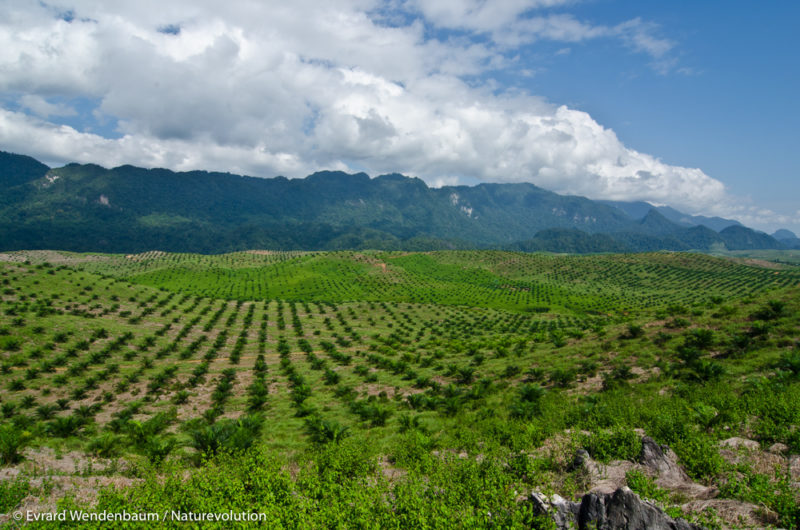
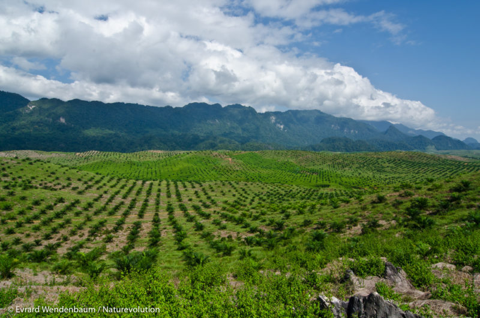

Misyon Nou
« Ewo Latè yo » se yon inisyativ elèv yo mennen pou sansibilize, edike ak aji kont devwastasyon forè yo ann Ayiti. Pwojè nou an mete aksan sou patisipasyon aktif jèn yo, patisipasyon kominote a ak chwa espès lokal ki adapte.

« Ewo Latè yo » se yon inisyativ elèv yo mennen pou sansibilize, edike ak aji kont devwastasyon forè yo ann Ayiti. Pwojè nou an mete aksan sou patisipasyon aktif jèn yo, patisipasyon kominote a ak chwa espès lokal ki adapte.

Chwazi pou kwasans rapid li, rezistans li nan sechrès ak pwopriyete nitrisyonèl li yo. Li ede kont malnitrisyon lokal la.
Espès ki fikse azòt ki amelyore fekondite tè a, favorize kwasans lòt plant ak bay lonbraj.
Kwasans rapid nan klima twopikal, trè rezistan nan sechrès, pwopriyete medsin ak repouse ensèk.
Pye bwa trè rezistan, kwasans rapid, fèy dekoratif, bay lonbraj epi li ka sèvi kòm bwa chofaj.
Pye bwa ki bay fwi, kwasans rapid, itil pou alimantasyon, fasil pou plante toupre kay.
Plant ki pwoteje kont ewozyon, pouse an touf epè, ideyal kòm konpleman reboisman.
Itilize pou ranfòse tè a ak azòt, li pouse rapidman epi li ede estabilize tè ki degrad.


 


Ou vle konnen plis, sipòte pwojè a oswa patisipe ?
Kontakte nou pa imèl : herosdelaterre@gmail.com
Rejwenn nou, vin yon ewo latè !
« Chak pyebwa nou plante se yon pwomès nou fè bay Latè a. Yon grenn espwa pou Ayiti. Ansanm, nou pa sèlman rekouvri yon espas ak vèti, nou rekonstwi lavni nou, nou reveye jès nou, epi nou avanse men nan men pou yon planèt pi vivan ak pi jis. »